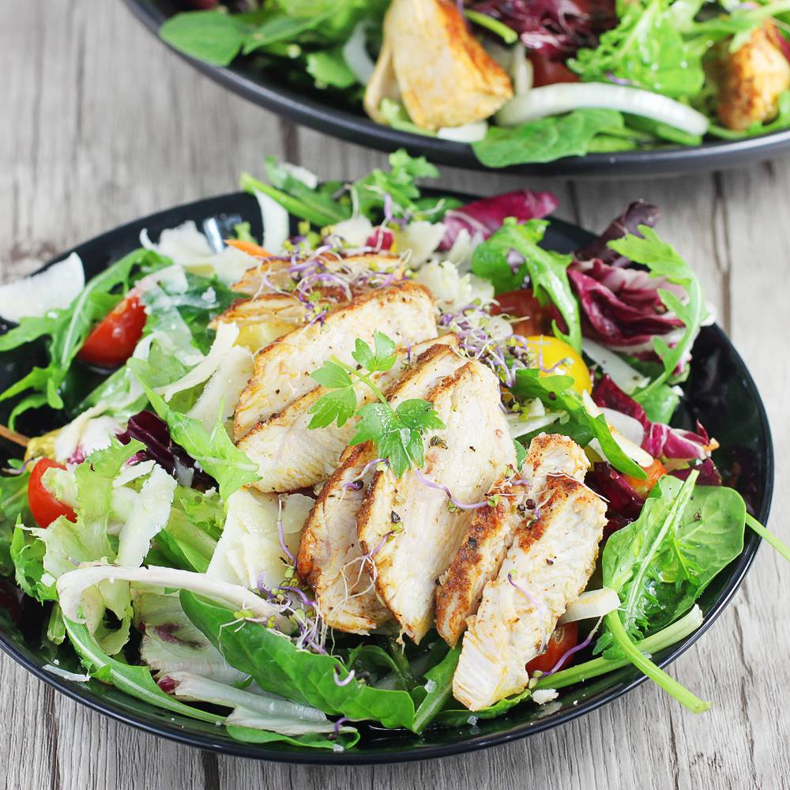
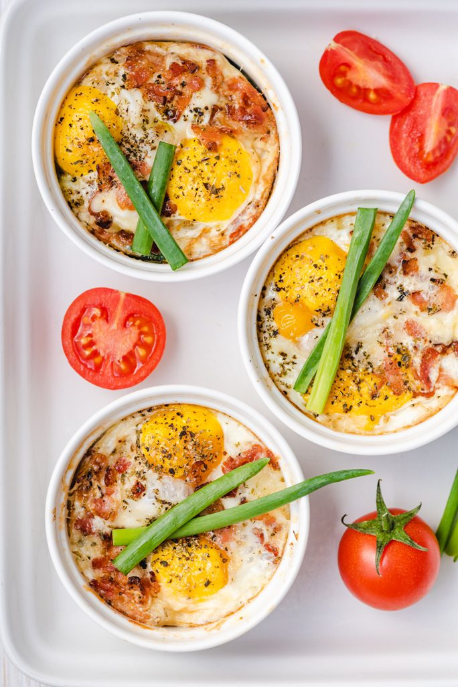
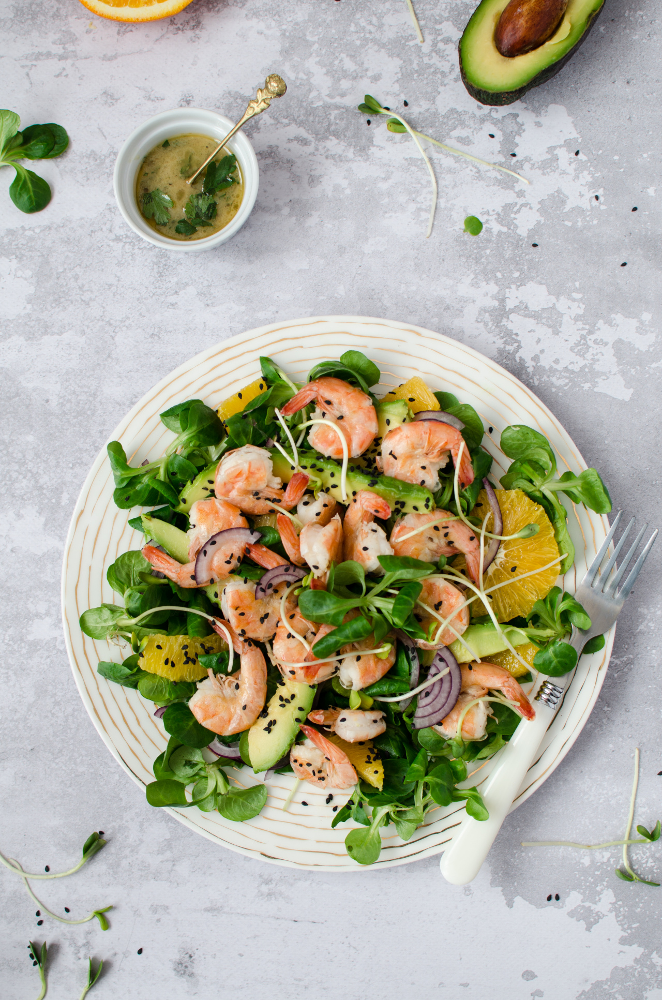
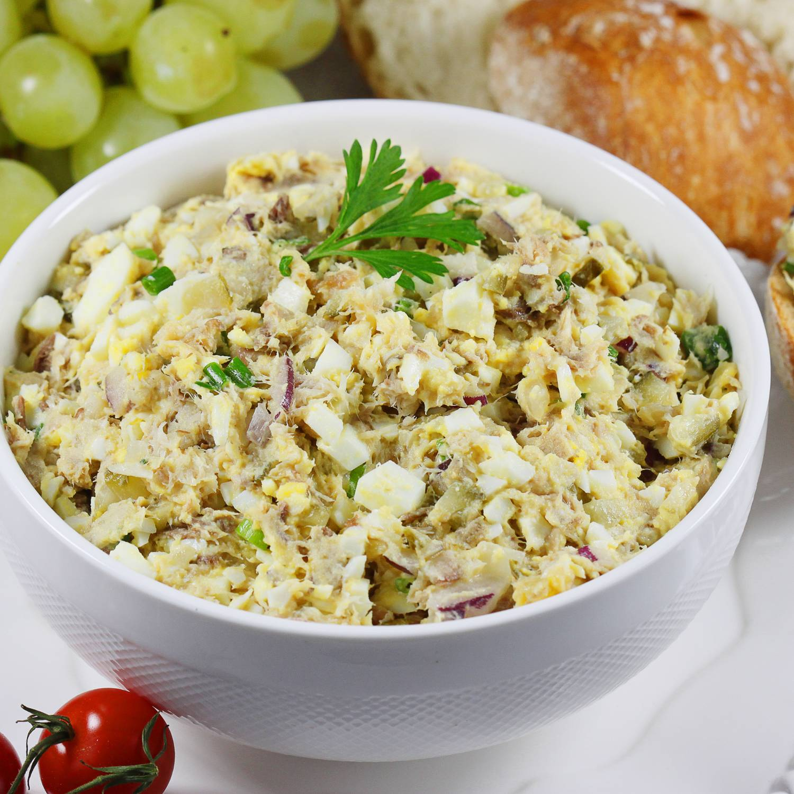

Śniadania
Omlet z warzywami
Składniki dla 2 porcji:
Jajko 2 szt.
Cebula 50 g
Pieczarki 25 g
Szpinak 50 g
Papryka czerwona 50 g
Ser edamski 50 g
Olej rzepakowy 24 ml
Przyprawy: sól, pieprz
Jajko 2 szt.
Cebula 50 g
Pieczarki 25 g
Szpinak 50 g
Papryka czerwona 50 g
Ser edamski 50 g
Olej rzepakowy 24 ml
Przyprawy: sól, pieprz
Przepis na omlet z warzywami:
- Na patelni rozgrzej olej.
- Pieczarki drobno pokrój i podsmaż na patelni. Przełóż do miseczki żeby ostygły.
- Jajka wbij do miski, ubij delikatnie trzepaczką.
- Szpinak delikatnie posiekaj, paprykę i cebulę drobno pokrój, ser zetrzyj na tarce. Dodaj wszystko do jajek.
- Jajka dokładnie wymieszaj z warzywami, dopraw 1/4 łyżeczki soli i pieprzu.
- Rozgrzej patelnię, na której smażone były pieczarki i wylej masę jajeczną.
- Smaż na małym ogniu pod przykryciem przez 5 minut aż góra będzie ścięta.
 Pieczona owsianka z jabłkiem
Pieczona owsianka z jabłkiem
Składniki dla 1 porcji:
Jabłko 180 g
Płatki owsiane 50 g
Mleko 1,5% 120 ml
Miód 12 g
Cynamon 2 g
Orzechy włoskie 15 g
Przyprawy: cynamon, miód
Jabłko 180 g
Płatki owsiane 50 g
Mleko 1,5% 120 ml
Miód 12 g
Cynamon 2 g
Orzechy włoskie 15 g
Przyprawy: cynamon, miód
Przepis na pieczoną owsiankę z jabłkiem:
- Do szklanego naczynia wsyp płatki
owsiane i zalej mlekiem. - Dodaj starte jabłko lub pokrojone w
drobną kosteczkę. - Całość dokładnie wymieszaj.
- Następnie dodaj miód, cynamon i
posiekane orzechy włoskie. - Całość ponownie dokładnie wymieszaj.
- Owsiankę piecz w 180 st. C przez około
25 minut.
 Placki twarogowe (5placków)
Placki twarogowe (5placków)
Składniki dla 10 porcji:
Ser twarogowy półtłusty 250 g
Jajko 2 szt.
Mąka pszenna - typ 450 (tortowa) 40 g
Cukier puder 20 g
Olej rzepakowy 20 ml
Przyprawy: cukier z prawdziwą wanilią
Ser twarogowy półtłusty 250 g
Jajko 2 szt.
Mąka pszenna - typ 450 (tortowa) 40 g
Cukier puder 20 g
Olej rzepakowy 20 ml
Przyprawy: cukier z prawdziwą wanilią
Przepis na placuszki twarogowe:
- Białka oddzielamy od żółtek. Do miski z żółtkami dodajemy twaróg, mąkę pszenną, cukier puder oraz cukier z prawdziwą wanilią. Składniki dokładnie mieszamy do połączenia się.
- W osobnej misce białka ubijamy na sztywną pianę. Dodajemy ją do masy twarogowej i delikatnie mieszamy całość do momentu uzyskania jednolitej konsystencji.
- Na patelni rozgrzewamy olej. Smażymy na nim cienkie placuszki na złoty kolor z obu stron.
- Podajemy je z ulubionymi dodatkami.
Składniki dla 7 porcji:
Mąka owsiana pełnoziarnista 40 g
Odżywka białkowa 10 g
Jajko 1 szt.
Mleko 3,2% 100 ml
Olej rzepakowy 20 ml
Maliny 200 g
Mąka owsiana pełnoziarnista 40 g
Odżywka białkowa 10 g
Jajko 1 szt.
Mleko 3,2% 100 ml
Olej rzepakowy 20 ml
Maliny 200 g
Przepis na naleśniki z odżywką białkową:
- Mąkę owsianą, odżywkę białkową, jajko oraz mleko przekładamy do jednej miski. Składniki dokładnie mieszamy za pomocą miksera lub trzepaczki tak, aby masa była jednolita bez grudek.
- Na patelni rozgrzewamy olej. Smażymy na nim cienkie naleśniki na rumiany kolor z obu stron.
- Podajemy je z malinami lub innymi ulubionymi dodatkami.
Tortilla wegetariańska
Przepis na tortillę wegetariańską:
Menemen
Przepis na menemen:
Sałatka z awokado i tuńczykiem
Przepis na sałatkę z awokado i tuńczykiem:
Owsianka z truskawkami
Przepis na owsiankę z truskawkami:
Bruschetta z pomidorami
Przepis na bruschettę z pomidorami:
Omlet z masłem orzechowym
Przepis na :
Szakszuka fit
Przepis na szakszukę:
Gofry z cukinii
Przepis na gofry z cukinii:
Czekoladowa gryczanka z truskawkami i orzechami
Przepis na czekoladową gryczankę z truskawkami i orzechami :
Leczo z cukinią i pieczarkami
Przepis na :
Papryka faszerowana mięsem mielonym i ryżem
Przepis na paprykę faszerowaną mięsem mielonym i ryżem:
Dorsz w pomidorach
Przepis na dorsza w pomidorach:
Pulpety w sosie koperkowym
Przepis na pulpety w sosie koperkowym:
Ryba na parze
Przepis na rybę na parze:
 Fit pizza
Fit pizza
Przepis na fit pizzę:
Szaszłyki z kurczaka z piekarnika
Przepis na szaszłyki z kurczaka z piekarnika:
Schab bez panierki
Przepis na schab bez panierki:
Omlet na słodko bez ubijania
Przepis na omlet na słodko bez ubijania:
Kasza bulgur z kurczakiem
Przepis na kaszę bulgur z kurczakiem:
Pasta z awokado z jajkiem
Przepis na pastę z awokado z jajkiem:
Sałatka z kurczakiem fit
Przepis na sałatkę z kurczakiem fit:
Jajka z piekarnika
Przepis na jajka z piekarnika:
Lekkostrawna sałatka z awokado
Przepis na lekkostrawna sałatka z awokado:
Owsianka z mikrofali bez cukru
Przepis na owsiankę z mikrofali bez cukru:
Omlet z rukolą
Przepis na omlet z rukolą:
Pasta z makreli wędzonej
Przepis na pastę z makreli wędzonej:
Zupa z dyni piżmowej z grzankami
Przepis na zupę z dyni piżmowej z grzankami:
Dietetyczne placki z cukinii
Przepis na dietetyczne placki z cukinii:
Makaron chiński z kurczakiem
Przepis na makaron chiński z kurczakiem:
Składniki dla 1 porcji:
Tortilla pełnoziarnista 62 g
Serek kanapkowy naturalny 25 g
Papryka czerwona 115 g
Ogórek 90 g
Nasiona słonecznika 10 g
Rukola 20 g
Tortilla pełnoziarnista 62 g
Serek kanapkowy naturalny 25 g
Papryka czerwona 115 g
Ogórek 90 g
Nasiona słonecznika 10 g
Rukola 20 g
Przepis na tortillę wegetariańską:
- Na suchej patelni upraż nasiona, aż lekko się zarumienią i zaczną wydzielać orzechowy zapach.
- Paprykę umyj i usuń z niej gniazdo nasienne. Następnie pokrój w paski.
- Ogórka umyj i pokrój w półplasterki.
- Tortillę posmaruj serkiem kanapkowym. Wyłóż na nią przygotowane warzywa, rukolę i posyp nasionami.
- Ciasno zwiń w rulon.
- Wskazówka: by tortilla była bardziej zwarta możesz zawinąć ją w folię spożywczą i schować do lodówki na 15 minut. To ułatwi jej krojenie.
Składniki dla 2 porcji:
Oliwa z oliwek 30 ml
Masło 10 g
Pomidor 240 g
Cebula 100 g
Papryka czerwona 70 g
Ser parmezan 20 g
Pasta paprykowa gochujang 10 g
Jajko 4 szt.
Przyprawy: sól, pieprz, szczypiorek, czosnek granulowany
Oliwa z oliwek 30 ml
Masło 10 g
Pomidor 240 g
Cebula 100 g
Papryka czerwona 70 g
Ser parmezan 20 g
Pasta paprykowa gochujang 10 g
Jajko 4 szt.
Przyprawy: sól, pieprz, szczypiorek, czosnek granulowany
Przepis na menemen:
- Pomidory natnij lekko w kilku miejscach i zalej wrzątkiem, a po 30 sekundach przełóż je do bardzo zimnej wody. Zdejmij skórę.
- Rozgrzej masło z oliwą na patelni.
- Posiekaną drobno cebulę oraz pokrojoną drobno paprykę podsmaż na tłuszczu ze szczyptą soli.
- Jak warzywa lekko się zarumienią, dodaj 125 ml wody oraz pastę gochujang. Zamiast pasty można dodać papryczkę chilli.
- Całość gotuj do miękkości papryki.
- Dodaj pokrojone drobno pomidory, sól, pieprz, czosnek suszony i opcjonalnie cukier do smaku
- Wszystko gotuj około 10 minut do momentu zagęszczenia i powstania sosu.
- Po tym czasie wbij jajka do pomidorów, dokładnie mieszaj i smaż, aż powstanie odpowiednia dla Ciebie konsystencja.
- Parmezan zetrzyj na drobnych oczkach tarki, a szczypiorek posiekaj. Posyp jajecznicę.
Składniki dla 3 porcji:
Tuńczyk w sosie własnym 170 g
Awokado 140 g
Jajko 3 szt.
Szpinak 100 g
Rukola 40 g
Oliwki czarne 30 g
Pomidory koktajlowe 200 g
Ogórek 180 g
Oliwa z oliwek 30 ml
Cebula czerwona 100 g
Sok z cytryny 5 ml
Przyprawy: sól, pieprz, chilli, zioła prowansalskie, czosnek granulowany
Tuńczyk w sosie własnym 170 g
Awokado 140 g
Jajko 3 szt.
Szpinak 100 g
Rukola 40 g
Oliwki czarne 30 g
Pomidory koktajlowe 200 g
Ogórek 180 g
Oliwa z oliwek 30 ml
Cebula czerwona 100 g
Sok z cytryny 5 ml
Przyprawy: sól, pieprz, chilli, zioła prowansalskie, czosnek granulowany
Przepis na sałatkę z awokado i tuńczykiem:
- Jaja ugotuj na twardo. Następnie ostudź i obierz. Obrane jaj pokrój na ćwiartki.
- Tuńczyka odsącz z zalewy i rozdrobnij za pomocą widelca.
- Rukolę i szpinak opłucz, następnie wyłóż na dnie miski.
- Awokado przepołów i pozbaw pestki. Ponacinaj wzdłuż i wszerz, tak by powstała gruba kostka. Następnie przy pomocy małej łyżeczki wyciągnij owoc ze skórki. Dodaj do sałaty.
- Pomidory, ogórka i cebulę dokładnie umyj. Cebulę obierz i pokrój w piórka. Ogórka pokrój w cienkie plastry, a pomidorki przetnij na pół. Dodaj warzywa do sałaty, a na wierz wysyp oliwki i rozdrobnionego tuńczyka.
- Składniki w misce dobrze wymieszaj, następnie poukładaj dekoracyjnie na wierzchu ćwiartki jaj.
- W osobnej miseczce zmieszaj oliwę z sokiem z cytryny, dodaj przyprawy i zioła. Następnie ponownie energicznie wymieszaj zawartość naczynia.
- Gotową sałatkę polej przygotowanym sosem.
Składniki dla 1 porcji:
Płatki owsiane 50 g
Mleko 2% 125 ml
Truskawki 70 g
Miód 5 g
Przyprawy: cynamon
Płatki owsiane 50 g
Mleko 2% 125 ml
Truskawki 70 g
Miód 5 g
Przyprawy: cynamon
Przepis na owsiankę z truskawkami:
- W garnku zagotuj mleko. Dodaj do niego płatki. Wsyp szczyptę cynamonu.
- Owsiankę gotuj przez 10 minut do zmięknięcia płatków, od czasu do czasu mieszając.
- Gotową owsiankę podawaj z opłukanymi truskawkami i odrobiną miodu.
Składniki dla 3 porcji:
Bagietka francuska 140 g
Pomidory koktajlowe 400 g
Oliwa z oliwek 30 ml
Przyprawy: sól, pieprz, bazylia
Bagietka francuska 140 g
Pomidory koktajlowe 400 g
Oliwa z oliwek 30 ml
Przyprawy: sól, pieprz, bazylia
Przepis na bruschettę z pomidorami:
- Bagietkę pokrój na kromki i podpiecz na suchej patelni lub w tosterze.
- Pomidory pokrój w kostkę, czosnek drobno posiekaj i wymieszaj z oliwą i przyprawami.
- Na grzanki ułóż pomidory.
- Podawaj udekorowane świeżą bazylią lub natką pietruszki.
Składniki dla 1 porcji:
Jajko 3 szt.
Masło orzechowe 15 g
Olej rzepakowy 10 ml
Przyprawy: sól
Jajko 3 szt.
Masło orzechowe 15 g
Olej rzepakowy 10 ml
Przyprawy: sól
Przepis na :
- Jajka podziel na białka i żółtka.
- Żółtka ucieraj z masłem orzechowym do uzyskania gładkiej masy.
- Białka ubij na sztywną pianę i połącz z żółtkami.
- Tak przygotowany omlet usmaż na rozgrzanym oleju rzepakowym.
Składniki dla 4 porcji:
Oliwa z oliwek 15 ml
Czosnek 10 g
Cebula 100 g
Papryka czerwona 230 g
Kolendra świeża 20 g
Pomidory w puszce 400 g
Passata pomidorowa 200 g
Jajko 4 szt.
Przyprawy: sól, pieprz, chilli, kumin
Oliwa z oliwek 15 ml
Czosnek 10 g
Cebula 100 g
Papryka czerwona 230 g
Kolendra świeża 20 g
Pomidory w puszce 400 g
Passata pomidorowa 200 g
Jajko 4 szt.
Przyprawy: sól, pieprz, chilli, kumin
Przepis na szakszukę:
- Rozgrzej oliwę z oliwek na dużej patelni, dodaj posiekany czosnek, cebulę, papryczkę, kolendrę i kmin. Smaż przez kilka minut, aż zacznie pachnieć, około 3 do 5 minut
- Dodaj pokrojone w kostkę pomidory i sos pomidorowy. Zmniejsz ogień do średniego, wymieszaj i gotuj na wolnym ogniu przez 3 do 5 minut.
- Zrób 4 otwory na patelni i wbij jajko do każdego otworu.
- Przykryj pokrywką i smaż przez 20 minut lub do momentu, gdy jajko ugotuje się do pożądanej miękkości.
Składniki dla 4 porcji:
Cukinia 300 g
Jajko 1 szt.
Proszek do pieczenia 4 g
Cukier 40 g
Przyprawy: cukier
Cukinia 300 g
Jajko 1 szt.
Proszek do pieczenia 4 g
Cukier 40 g
Przyprawy: cukier
Przepis na gofry z cukinii:
- Cukinię umyj i zetrzyj na tarce o średnich oczkach.
- Odstaw ją do miski na 10 minut następnie odciśnij nadmiar wody.
- Do cukinii wsyp mąkę i wbij jajko.
- Wlej pół szklanki wody i dodaj cukier.
- Całość dokładnie wymieszaj.
- Gofrownicę dobrze nagrzej, a następnie wlewaj małymi partiami ciasto.
- Gofry piecz do zarumienienia, około 6 minut, w zależności od posiadanej gofrownicy.
Składniki dla 2 porcji:
Płatki gryczane 100 g
Napój roślinny (mleko) z orzechów nerkowca 250 ml
Kakao 16% (proszek) 12 g
Truskawki 150 g
Orzechy włoskie 40 g
Przyprawy: pieprz, kurkuma, erytrytol
Płatki gryczane 100 g
Napój roślinny (mleko) z orzechów nerkowca 250 ml
Kakao 16% (proszek) 12 g
Truskawki 150 g
Orzechy włoskie 40 g
Przyprawy: pieprz, kurkuma, erytrytol
Przepis na czekoladową gryczankę z truskawkami i orzechami :
- W garnku umieść napój roślinny, kakao oraz płatki. Dodaj erytrytol do smaku jeśli potrzebujesz.
- Zagotuj wszystko ciągle mieszając. Mieszaj dokładnie, by grudki kakao dobrze się rozpuściły. Dodaj szczyptę kurkumy i pieprzu.
- Gdy wszystko zacznie wrzeć zestaw garnek i wylej płatki do miski. Jeżeli chcesz - możesz gotować trochę dłużej, by masa była bardziej gęsta lub dodać więcej płynu jeśli chcesz rzadszą konsystencję.
- Dodaj do płatek truskawki. Mogą być świeże lub mrożone. Można zmiksować na mus, dać w całości lub pokrojone.
- Posyp danie posiekanymi orzechami.
Obiady
Leczo z cukinią i pieczarkami
Składniki dla 4 porcji:
Cukinia 300 g
Pieczarki 300 g
Papryka czerwona 250 g
Papryka żółta 250 g
Pomidory w puszce 500 g
Cebula 100 g
Olej rzepakowy 10 ml
Przyprawy: sól, pieprz, majeranek, papryka słodka, bazylia, zioła prowansalskie
Cukinia 300 g
Pieczarki 300 g
Papryka czerwona 250 g
Papryka żółta 250 g
Pomidory w puszce 500 g
Cebula 100 g
Olej rzepakowy 10 ml
Przyprawy: sól, pieprz, majeranek, papryka słodka, bazylia, zioła prowansalskie
Przepis na :
- Pieczarki umyj, obierz i pokrój w plastry.
- Cebulę drobno posiekaj.
- Cukinię i papryki pokrój w plastry.
- Na patelni rozgrzej oliwę, dodaj cebulkę i podsmażaj.
- Dodaj pieczarki i warzywa. Dopraw i podsmażaj.
- Całość zalej pomidorami i duś pod przykryciem na średnim ogniu.
- Podawaj z kaszą lub ryżem.
Składniki dla 8 porcji:
Papryka czerwona 480 g
Ryż brązowy 100 g
Mięso mielone z indyka 500 g
Cebula 100 g
Olej rzepakowy 20 ml
Pomidory w puszce 400 g
Ser Mozzarella 125 g
Przyprawy: sól, pieprz, papryka ostra, czosnek granulowany
Papryka czerwona 480 g
Ryż brązowy 100 g
Mięso mielone z indyka 500 g
Cebula 100 g
Olej rzepakowy 20 ml
Pomidory w puszce 400 g
Ser Mozzarella 125 g
Przyprawy: sól, pieprz, papryka ostra, czosnek granulowany
Przepis na paprykę faszerowaną mięsem mielonym i ryżem:
- Ryż gotujemy w osolonej wodzie zgodnie z opisem na opakowaniu.
- Cebulę kromy w kostkę i podsmażamy na oleju na złoty kolor. Następnie dodajemy mięso i dalej smażymy całość.
- Pod koniec smażenia dodajemy pomidory z puszki. Całość doprawiamy i dusimy pod przykryciem około 5 minut.
- Papryki myjemy, przecinamy je na pół i usuwamy gniazda nasienne.
- Gotowy farsz mięsny łączymy z ugotowanym ryżem. Nadzienie wkładamy do papryk.
- Papryki z farszem posypujemy tartym serem.
- Całość zapiekamy w piekarniku przez 30 minut w temperaturze 180 stopni.
Składniki dla 6 porcji:
Dorsz filet 500 g
Cebula 100 g
Pomidor 400 g
Olej rzepakowy 20 ml
Przyprawy: sól, pieprz, tymianek
Dorsz filet 500 g
Cebula 100 g
Pomidor 400 g
Olej rzepakowy 20 ml
Przyprawy: sól, pieprz, tymianek
Przepis na dorsza w pomidorach:
- Cebulę i pomidory kroimy w kostkę. Cebulę podsmażamy na złoty kolor, a następnie dodajemy pomidory. Całość dokładnie mieszamy i gotujemy. Składniki doprawiamy przyprawami.
- W naczyniu żaroodpornym układamy filety ryby. Zalewamy je sosem pomidorowym.
- Danie zapiekamy w piekarniku około 25 minut w temperaturze 180 st. C.
Składniki dla 8 porcji:
Szynka wieprzowa surowa 500 g
Mąka pszenna typ 1850 6 g
Cebula 50 g
Jajko 1 szt.
Koperek 16 g
Olej rzepakowy 12 ml
Marchewka 17 g
Przyprawy: sól, pieprz, papryka słodka, kminek mielony, ziele angielskie, liść laurowy
Szynka wieprzowa surowa 500 g
Mąka pszenna typ 1850 6 g
Cebula 50 g
Jajko 1 szt.
Koperek 16 g
Olej rzepakowy 12 ml
Marchewka 17 g
Przyprawy: sól, pieprz, papryka słodka, kminek mielony, ziele angielskie, liść laurowy
Przepis na pulpety w sosie koperkowym:
- Mięso z szynki zmiel.
- Do mięsa dodaj sporą szczyptę soli, pieprzu, jajko, połowę posiekanego koperku. Masę dokładnie wyrób.
- W garnku zagotuj około litr wody.
- Mięso uformuj w równej wielkości pulpeciki i wrzucaj je do wrzątku.
- Dodaj mały liść laurowy, dwa ziela angielskie, sporą szczyptę soli i pieprzu
- Do sosu dodaj przekrojoną na pół cebulę oraz połówkę marchewki.
- Pulpeciki gotuj na małym ogniu przez 15 minut.
- Po tym czasie przygotuj zasmażkę. Na patelni rozgrzej łyżkę oleju, dodaj łyżkę mąki pszennej pełnoziarnistej i delikatnie podsmaż. Intensywnie mieszając dodaj 2-3 chochelki sosu z pulpecików.
- Zasmażkę dodaj do pulpecików.
- Sos zagotuj i utrzymuj we wrzeniu przez około 3 minuty aż zgęstnieje.
- Pod koniec dodaj pozostały koperek.
Składniki dla 2 porcji:
Dorsz filet 300 g
Oliwa z oliwek 25 ml
Przyprawy: imbir świeży, pieprz biały
Dorsz filet 300 g
Oliwa z oliwek 25 ml
Przyprawy: imbir świeży, pieprz biały
Przepis na rybę na parze:
- Korzeń imbiru obierz i pokrój w cienkie paseczki.
- Zagotuj wodę w naczyniu do gotowania na parze.
- Filety rybne opłucz, osusz i umieść w garnku do gotowania na parze.
- Filety ryby oprósz pieprzem i obłóż je imbirem.
- Zamknij pokrywę garnka do gotowania na parze i gotuj rybę przez około 8-10 minut.
- Gotową rybę podawaj polaną oliwą.
Fit pizza
Składniki dla 4 porcji:
Piersi kurczaka bez skóry 200 g
Rukola 60 g
Czosnek 15 g
Oliwa z oliwek 30 ml
Pomidory w puszce 400 g
Drożdże świeże 25 g
Sól 10 g
Cukier 6 g
Mąka pszenna 2000 pełnoziarnista 325 g
Ser mozzarella light 125 g
Przyprawy: sól, pieprz, oregano, przyprawa do kurczaka
Piersi kurczaka bez skóry 200 g
Rukola 60 g
Czosnek 15 g
Oliwa z oliwek 30 ml
Pomidory w puszce 400 g
Drożdże świeże 25 g
Sól 10 g
Cukier 6 g
Mąka pszenna 2000 pełnoziarnista 325 g
Ser mozzarella light 125 g
Przyprawy: sól, pieprz, oregano, przyprawa do kurczaka
Przepis na fit pizzę:
- Z piersi kurczaka wytnij błonki i żyłki. Mięso podziel na cieńsze kawałki. Obtocz je w soli, świeżo mielonym pieprzu i przyprawie do kurczaka. Usmaż kurczaka na patelni grillowej i odłóż do przestygnięcia. Pokrój go w kostkę.
- Do garnka wlej 1 łyżkę oliwy i dodaj przeciśnięty przez praskę czosnek. Całość podsmażaj przez 1,5 min. Wsyp 1 łyżkę oregano i wymieszaj. Następnie dodaj krojone pomidory z puszki, 1 łyżeczkę soli i nieco świeżo mielonego pieprzu do smaku. Wymieszaj i gotuj na małym ogniu z lekko uchyloną pokrywką przez ok. 10 min, co jakiś czas mieszając. Gdy sos nieco ostygnie, zblenduj kawałki pomidorów (możesz to pominąć, jeśli takie pomidory na pizzy ci odpowiadają).
- Ser mozzarella light zetrzyj na tarce. Rukolę opłucz i osusz.
- Do 250 ml letniej wody rozkrusz drożdże i wsyp 1 łyżeczką cukru. Całość dobrze wymieszaj i odstaw na 5 min.
- Do przesianej mąki dodaj 1 łyżeczkę soli i 1 łyżkę oliwy z oliwek. Wymieszaj i powoli wlej rozczyn. Zacznij wyrabiać ciasto w misce, ale gdy składniki wstępnie się połączą, przełóż masę na stolnicę i tam zagniataj przez ok. 10-15 min. Następnie odłóż ciasto do miski i natrzyj je 1 łyżką oliwy. Miskę przykryj ściereczką i odstaw na 45-60 min w ciepłe miejsce.
- Ciasto wyłóż na blaszkę i powoli rozciągaj za pomocą palców, aż uzyskasz pożądany kształt pizzy.
- Rozciągnięte ciasto posmaruj sosem, a potem dodaj rukolę i kurczaka. Na koniec posyp je serem.
- Pizzę piecz przez ok. 15-18 min w temperaturze 220 stopni (grzanie góra-dół).
Składniki dla 4 porcji:
Piersi kurczaka bez skóry 500 g
Cebula 100 g
Papryka czerwona 150 g
Cukinia 200 g
Pieczarki 200 g
Olej rzepakowy 40 ml
Przyprawy: sól, pieprz, papryka słodka, czosnek granulowany
Piersi kurczaka bez skóry 500 g
Cebula 100 g
Papryka czerwona 150 g
Cukinia 200 g
Pieczarki 200 g
Olej rzepakowy 40 ml
Przyprawy: sól, pieprz, papryka słodka, czosnek granulowany
Przepis na szaszłyki z kurczaka z piekarnika:
- Pierś z kurczaka pokrój w kostkę.
- Cebulę obierz z łupiny i przekrój na ćwiartki.
- Paprykę oczyść z gniazd nasiennych i pokrój w dużą kostkę.
- Cukinię pokrój w plastry.
- Pieczarki przekrój na połówki.
- Pierś z kurczaka umieść w misce wraz z warzywami.
- Dopraw całość solą, pieprzem, papryką słodką oraz czosnkiem.
- Wlej olej rzepakowy i wymieszaj.
- Patyczki do szaszłyków namocz w wodzie na 30 minut przed pieczeniem.
- Nadziewaj składniki na patyczki.
- Ułóż szaszłyki na blasze wyłożonej papierem do pieczenia.
- Piecz w nagrzanym do 180 st. C piekarniku przez 20-25 minut.
- Szaszłyki podawaj z dodatkiem sosu koperkowego lub majonezu.
Składniki dla 4 porcji:
Schab wieprzowy bez kości 400 g
Oliwa z oliwek 45 ml
Przyprawy: sól, pieprz, majeranek, papryka słodka, kminek mielony, gałka muszkatołowa, mielony czosnek
Schab wieprzowy bez kości 400 g
Oliwa z oliwek 45 ml
Przyprawy: sól, pieprz, majeranek, papryka słodka, kminek mielony, gałka muszkatołowa, mielony czosnek
Przepis na schab bez panierki:
- Mięso podziel na plastry i oczyść z błonek.
- Każdy kotlet rozbij tłuczkiem na bardzo cienkie plastry.
- Kotlety natrzyj dokładnie przyprawami.
- Na patelni rozgrzej oliwę i smaż na niej kotlety, z każdej strony, po około 7 - 8 minut, by były rumiane.
Składniki dla 1 porcji:
Jajko 3 szt.
Budyń (proszek) 40 g (bez dodatku cukru)
Mąka żytnia typ 2000 20 g
Jogurt naturalny 60 ml
Erytrytol 15 g
Olej rzepakowy 10 ml
Jajko 3 szt.
Budyń (proszek) 40 g (bez dodatku cukru)
Mąka żytnia typ 2000 20 g
Jogurt naturalny 60 ml
Erytrytol 15 g
Olej rzepakowy 10 ml
Przepis na omlet na słodko bez ubijania:
- Rozgrzej olej na patelni.
- Wszystkie składniki na omleta umieść w misce i wymieszaj trzepaczką na gładką masę.
- Masę wylej na patelnię i smaż do złotego koloru.
- Przekręć omleta na drugą stronę i smaż kilka chwil, aż złapie złoty kolor.
Składniki dla 4 porcji:
Kasza bulgur 250 g
Piersi kurczaka bez skóry 200 g
Cukinia 300 g
Papryka czerwona 120 g
Pieczarki 120 g
Cebula 100 g
Czosnek 20 g
Olej rzepakowy 20 ml
Przyprawy: sól, pieprz, papryka słodka, papryka wędzona
Kasza bulgur 250 g
Piersi kurczaka bez skóry 200 g
Cukinia 300 g
Papryka czerwona 120 g
Pieczarki 120 g
Cebula 100 g
Czosnek 20 g
Olej rzepakowy 20 ml
Przyprawy: sól, pieprz, papryka słodka, papryka wędzona
Przepis na kaszę bulgur z kurczakiem:
- Pierś z kurczaka dokładnie umyj, osusz, pokrój na mniejsze kawałki i dopraw do smaku.
- Kaszę bulgur ugotuj według instrukcji na opakowaniu.
- Na mocno rozgrzanym oleju rzepakowym usmaż mięso, po chwili dodaj pokrojoną cebulę i czosnek przeciśnięty przez praskę.
- Dodaj pokrojoną w półksiężyce cukinię, paprykę pokrojoną w słupki i pieczarki przekrojone na pół.
- Na końcu dodaj ugotowaną kaszę, całość wymieszaj.
Kolacje
Pasta z awokado z jajkiem
Składniki dla 2 porcji:
Awokado 140 g
Jajko 2 szt
Olej lniany 10 ml
Cebula czerwona 50 g
Przyprawy: sól, pieprz, sok z cytryny, szczypiorek, czosnek, suszone pomidory z chilli
Awokado 140 g
Jajko 2 szt
Olej lniany 10 ml
Cebula czerwona 50 g
Przyprawy: sól, pieprz, sok z cytryny, szczypiorek, czosnek, suszone pomidory z chilli
Przepis na pastę z awokado z jajkiem:
- Jajka ugotuj na twardo.
- Awokado przekrój na pół. Usuń pestkę i wyjmij awokado łyżeczką.
- Posiekaj bardzo drobno cebulę.
- Ugotowane jajka obierz i dodaj do awokado razem z cebulą oraz olejem.
- Dopraw do smaku solą, pieprzem, suszonymi pomidorami z chilli, ząbkiem czosnku przeciśniętym przez praskę oraz sokiem z cytryny.
- Wszystkie składniki rozgnieć widelcem albo zblenduj blenderem.
- Pastę posyp szczypiorkiem i podawaj z ulubionymi dodatkami.
Składniki dla 3 porcji:
Makaron gryczany 150 g
Olej lniany 15 ml
Jogurt grecki 0% tłuszczu 70 ml
Piersi kurczaka bez skóry 200 g
Ogórki kiszone 150 g
Jajko 3 szt.
Papryka czerwona 140 g
Musztarda 30 g
Pestki dyni 20 g
Przyprawy: sól, pieprz, papryka słodka, kurkuma, szczypiorek
Makaron gryczany 150 g
Olej lniany 15 ml
Jogurt grecki 0% tłuszczu 70 ml
Piersi kurczaka bez skóry 200 g
Ogórki kiszone 150 g
Jajko 3 szt.
Papryka czerwona 140 g
Musztarda 30 g
Pestki dyni 20 g
Przyprawy: sól, pieprz, papryka słodka, kurkuma, szczypiorek
Przepis na sałatkę z kurczakiem fit:
- Makaron ugotuj zgodnie z instrukcją.
- Pierś z kurczaka pokrój w kostkę i przypraw. Ugotuj kurczaka na parze.
- Ugotuj jajka na twardo. Obierz i pokrój w dużą kostkę.
- Pokrój warzywa w kostkę.
- Jogurt, olej i musztardę wymieszaj ze sobą, dodaj sól i pieprz.
- Ugotowany i odcedzony makaron dodaj do miski. Dodaj także resztę składników i sos. Wymieszaj.
- Gotową sałatkę posyp posiekanym szczypiorkiem i pestkami.
Składniki dla 6 porcji:
Jajko 12 szt.
Olej rzepakowy 10 ml
Przyprawy: sól, pieprz, papryka słodka, szczypiorek
Jajko 12 szt.
Olej rzepakowy 10 ml
Przyprawy: sól, pieprz, papryka słodka, szczypiorek
Przepis na jajka z piekarnika:
- Piekarnik nagrzej na 190 stopni Celsjusza.
- Foremkę na muffiny posmaruj we wgłębieniach olejem.
- Do każdej foremki wbij po jednym jajku.
- Przypraw każde jajko solą, pieprzem i papryką.
- Wstaw jajka do piekarnika i piecz do momentu, w którym białko stanie się białe (zetnie się).
- Po wyjęciu podawaj z ulubionymi dodatkami i posyp szczypiorkiem.
Składniki dla 4 porcji:
Papryka czerwona 400 g
Cukinia 400 g
Awokado 300
Ogórek kiszony 200 g
Koperek ogrodowy świeży 30 g
Oliwa z oliwek 50 ml
Przyprawy: sól, pieprz
Papryka czerwona 400 g
Cukinia 400 g
Awokado 300
Ogórek kiszony 200 g
Koperek ogrodowy świeży 30 g
Oliwa z oliwek 50 ml
Przyprawy: sól, pieprz
Przepis na lekkostrawna sałatka z awokado:
- Paprykę oczyść z gniazd nasiennych, pokrój w ćwiartki.
- Cukinię pokrój na kawałki.
- Umieść warzywa na blasze, dopraw solą, pieprzem i skrop oliwą z oliwek.
- Piecz w nagrzanym do 200 st. C piekarniku przez 20 minut.
- Warzywa umieść w misce.
- Pokrój ogórka w kostkę.
- Awokado przekrój na pół, usuń pestkę.
- Miąższ pokrój w kostkę i wydrąż łyżką.
- Posiekaj koper.
- Umieść wszystkie składniki i misce.
- Dopraw solą, pieprzem i wymieszaj.
Składniki dla 1 porcji:
Płatki owsiane 30 g
Mleko 2% 200 ml
Maliny 50 g
Borówka amerykańska 50 g
Czekolada gorzka 18 g
Erytrytol 15 g
Masło orzechowe 30 g
Przyprawy: cynamon
Płatki owsiane 30 g
Mleko 2% 200 ml
Maliny 50 g
Borówka amerykańska 50 g
Czekolada gorzka 18 g
Erytrytol 15 g
Masło orzechowe 30 g
Przyprawy: cynamon
Przepis na owsiankę z mikrofali bez cukru:
- W misce umieść płatki owsiane, erytrytol oraz mleko. Wymieszaj.
- Grzej w mikrofalówce przez 2 minuty.
- Po tym czasie przemieszaj wszystkie składniki i ponownie grzej 2 minuty.
- Czas grzania dostosuj do własnych preferencji. Jeżeli konsystencja owsianki jest dla Ciebie odpowiednia - przejdź do kolejnego kroku. Jeśli nie - wymieszaj i grzej (co 30 sekund sprawdzaj konsystencję oraz miękkość płatków).
- Do owsianki dodaj umyte owoce, masło orzechowe, posyp wszystko posiekaną czekoladą i cynamonem.
Składniki dla 1 porcji:
Jajko 3 szt.
Olej rzepakowy 10 ml
Rukola 50 g
Ser mozzarella light 62 g
Szynka z piersi kurczaka 50 g
Cebula czerwona 30 g
Pomidory koktajlowe 100 g
Przyprawy: sól, pieprz, suszone pomidory z chilli
Jajko 3 szt.
Olej rzepakowy 10 ml
Rukola 50 g
Ser mozzarella light 62 g
Szynka z piersi kurczaka 50 g
Cebula czerwona 30 g
Pomidory koktajlowe 100 g
Przyprawy: sól, pieprz, suszone pomidory z chilli
Przepis na omlet z rukolą:
- Olej wlej na patelnię.
- Pokrój wędlinę z piersi kurczaka w kostkę i zarumień na patelni.
- Posiekaj drobno cebulę i dodaj do wędliny. Podsmaż na złoty kolor.
- Umyte pomidorki przekrój na pół.
- Jajka wbij do miski i roztrzep widelcem z przyprawami.
- Dodaj do jajek rukolę i wymieszaj.
- Wędlinę i cebulę zalej jajkami z rukolą. Ułóż na wierzchu pokrojone pomidorki.
- Przykryj patelnię przykrywką i smaż przez kilka chwil, by masa się lekko ścięła.
- Gdy to będzie możliwe, przekręć omlet na drugą stronę.
- Od razu posyp omlet startym na tarce serem.
- Smaż omlet pod przykryciem do rozpuszczenia sera.
Składniki dla 6 porcji:
Jajko 2 szt.
Makrela wędzona 250 g
Ogórek kiszony 120 g
Cebula 100 g
Majonez light 30 g
Jogurt naturalny 2% 50 g
Przyprawy: sól, pieprz, szczypiorek
Jajko 2 szt.
Makrela wędzona 250 g
Ogórek kiszony 120 g
Cebula 100 g
Majonez light 30 g
Jogurt naturalny 2% 50 g
Przyprawy: sól, pieprz, szczypiorek
Przepis na pastę z makreli wędzonej:
- Ugotuj jajka na twardo.
- Obraną ze skóry i pozbawioną ości rybę wyłóż do miski. Rozdrobnij widelcem.
- Dodaj ogórki i cebulę pokrojone w drobną kostkę.
- Ugotowane jajka obierz i pokrój w niewielką kostkę. Dodaj do ryby.
- Rybę z warzywami i jajkiem wymieszaj z majonezem, jogurtem, solą i pieprzem do smaku.
- Pastę posyp szczypiorkiem.
Składniki dla 5 porcji:
Bulion drobiowy 625 g
Dynia 500 g
Marchewka 90 g
Por 70 g
Ziemniaki późne 150 g
Cebula 50 g
Czosnek 15 g
Śmietanka kremowa 30% 50 g
Masło klarowane 10 g
Grzanki 30 g
Słonecznik nasiona łuskane 20 g
Przyprawy: sól, pieprz, papryka słodka, kurkuma, natka pietruszki świeża, chilli, cynamon
Bulion drobiowy 625 g
Dynia 500 g
Marchewka 90 g
Por 70 g
Ziemniaki późne 150 g
Cebula 50 g
Czosnek 15 g
Śmietanka kremowa 30% 50 g
Masło klarowane 10 g
Grzanki 30 g
Słonecznik nasiona łuskane 20 g
Przyprawy: sól, pieprz, papryka słodka, kurkuma, natka pietruszki świeża, chilli, cynamon
Przepis na zupę z dyni piżmowej z grzankami:
- Zagotuj w garnku bulion.
- W drugim garnku rozgrzej masło klarowane.
- Obierz warzywa i przygotuj do krojenia. Czosnek dodaj w całości, cebulę pokrój w dużą kostkę. Ziemniaki pokrój w niewielką kostkę. Dynię obierz ze skóry, usuń gniazdo nasienne i również pokrój w niewielką kostkę. Od pora odkrój korzenie. Pokrój w większe kawałki. Obraną marchew pokrój w grubsze plasterki. Dodaj warzywa do garnka, dodaj pół łyżeczki soli. Podsmaż warzywa przez około 10 minut. Uważaj, by nie przypalić. Podgrzewaj je pod przykryciem na niewielkim ogniu.
- Po upływie 10 minut dodaj do warzyw gorący bulion. Dodaj także przyprawy: szczyptę chilli, 1/4 łyżeczki pieprzu, kurkumy oraz cynamonu. Dodaj też 1 łyżeczkę papryki oraz sól do smaku. Gotuj wszystko do miękkości warzyw - około 30 minut.
- Gdy warzywa będą miękkie zblenduj zupę na krem. Możesz tutaj zmienić ilość bulionu - w zależności od preferencji. Dopraw zupę ostatecznie do smaku.
- Gotową zupę nalewaj do miseczek. Dodaj kleks ze śmietanki, posyp grzankami, słonecznikiem oraz świeżą natką pietruszki.
Składniki dla 2 porcji:
Cukinia 300 g
Ser Feta 50 g
Jajko 1 szt.
Skrobia ziemniaczana (mąka ziemniaczana) 50 g
Przyprawy: sól, pieprz, mielony czosnek, koper
Cukinia 300 g
Ser Feta 50 g
Jajko 1 szt.
Skrobia ziemniaczana (mąka ziemniaczana) 50 g
Przyprawy: sól, pieprz, mielony czosnek, koper
Przepis na dietetyczne placki z cukinii:
- Cukinię umyj i zetrzyj na tarce o małych oczkach do dużej miski. Odstaw na 5 minut. Odlej nadmiar wody.
- Do cukinii dodaj pokruszoną fetę, mąkę oraz wbij jajko. Dodaj sól, pieprz, czosnek i koperek i porządnie wszystko wymieszaj.
- Piekarnik nagrzej do 200 st. C.
- Wyjmij blachę, rozłóż na niej papier do pieczenia i uformuj na nim małe placuszki z masy cukiniowej.
- Wstaw blachę do piekarnika i piecz przez 35 minut.
Składniki dla 2 porcji:
Makaron Mie 100 g
Piersi kurczaka bez skóry 100 g
Brokuły 125 g
Papryka żółta 110 g
Cebula 25 g
Cebula czerwona 25 g
Olej rzepakowy 24 ml
Czosnek 12 g
Marchewka 50 g
Cebula dymka 20 g
Sezam nasiona 10 g
Sos sojowy 1 ml
Przyprawy: sól, pieprz, ocet ryżowy, imbir mielony, olej sezamowy
Makaron Mie 100 g
Piersi kurczaka bez skóry 100 g
Brokuły 125 g
Papryka żółta 110 g
Cebula 25 g
Cebula czerwona 25 g
Olej rzepakowy 24 ml
Czosnek 12 g
Marchewka 50 g
Cebula dymka 20 g
Sezam nasiona 10 g
Sos sojowy 1 ml
Przyprawy: sól, pieprz, ocet ryżowy, imbir mielony, olej sezamowy
Przepis na makaron chiński z kurczakiem:
- W misce wymieszaj 4 łyżki sosu sojowego, łyżkę octu ryżowego, szczyptę imbiru, soli i pieprzu.
- Marchewkę pokrój w słupki, paprykę w paski a cebulę w ćwiartki, brokuła podziel na różyczki, ząbki czosnku delikatnie rozgnieć.
- Brokuła ugotuj al dente wraz z makaronem.
- W woku rozgrzej olej.
- Dodaj cebulę i marchewkę. Podsmaż.
- Do woka dodaj kurczaka bez marynaty. Podsmaż szybko.
- Dodaj pozostałe warzywa, makaron oraz marynatę. Zredukuj sos przez około 3 minuty.
- Przełóż na talerz, dodaj sezam, odrobinę oleju sezamowego i cebulkę dymkę.